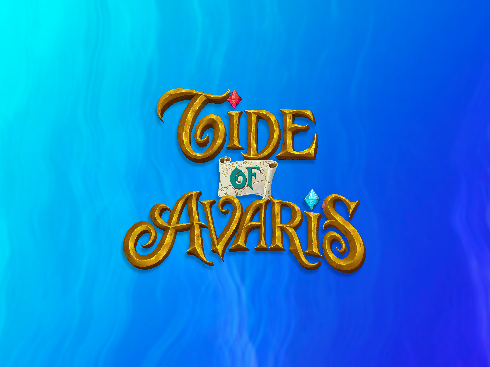
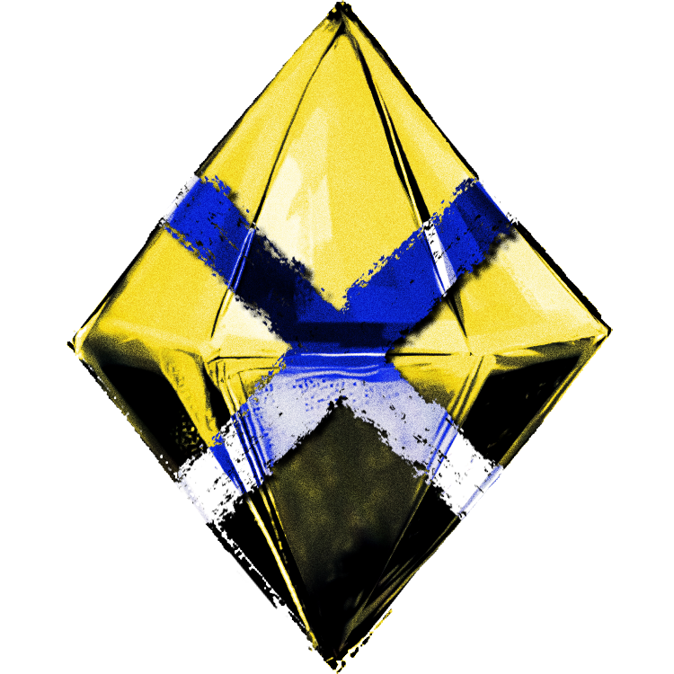
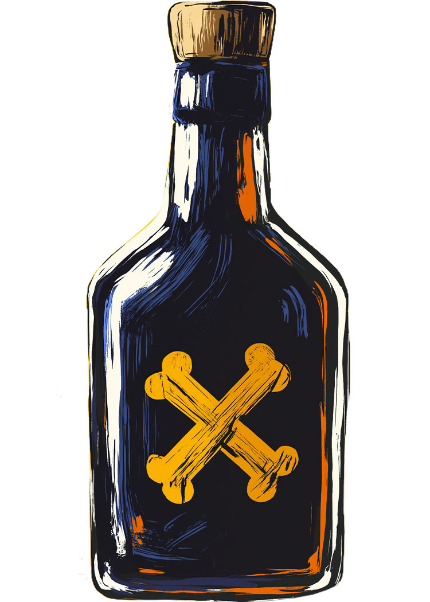

Competitive · Pirates · Dice · Negotiation

Tide of Avaris
Set sail for the Coralunas, where every treasure is a temptation and every pirate is a threat.
- Players2–4
- Time90–120 min
- Ages12+
- StatusIn Development
Watch the Trailer
Hoist the colors.
The pitch
Tide of Avaris is a competitive pirate strategy game for 2–4 players where captains race to collect, protect, and bury the most valuable treasure before the seas run dry. Each day, you’ll command your unruly crew dice to sail between islands, gather rum and gold, seize relics, battle rival pirates, and dodge the relentless Navy. But treasure left aboard your ship is never safe. Bury too early and you may fall behind; wait too long and another captain may steal your hard-earned loot.
Bury or bust
Every treasure in your hold is a bet on timing. Bury the chest now and you bank the score — but you also tell every other captain on the map exactly what you’re worth. Hold it one more day and you might double up. You might also wake up to an empty deck and a Navy frigate on the horizon.
Unruly crew dice
Each day, your crew rolls. Pips drive every action you can take — sail, fight, plunder, bury — and the dice never quite roll the way you wanted.
The treasure hold
Six gem slots, six colors, escalating payouts for matching sets. Spend rum and gold to keep your crew moving; bury treasures to bank the score.
Asymmetric captains
From Sable Marlowe the Silverfin to Obadiah Morrow the Hollow Saint — every captain comes with their own upgrade ladder and their own way of breaking the rules.
The Navy closes in
The Coralunas don’t stay calm. The rising tide drains the safe routes, the Navy hunts the richest holds, and the longer the game runs, the less the sea forgives.

The Crews of the Coralunas
Meet the captains
Every captain comes with their own upgrade ladder, their own grudges, and their own way of breaking the rules.


The Loot
Six treasures, one coast
The six treasures of the Coralunas. Pull them from islands, hide them in your hold, bury them on quiet shores. Match colors for escalating payouts — or guard a single rare gem the others can’t touch.

Locked treasures
Flip a treasure face-down and it locks. No rival pirate can steal it from your hold — not by brawl, not by bribe, not by Navy press-gang. The catch: locked or not, you still have to make it to a quiet shore and bury it to bank the score.

Rum & gold buy you another day
Rum keeps the crew rolling. Gold settles the brawls, the bribes, and the harbor fees. Spend it freely — it’s the treasures in your hold that you bury for the score.
The Map
The Coralunas, at low tide
Sixteen islands. Three tracks that govern the sea — Navy Hunts, Midnight Wager, Rising Tide. The longer the game runs, the less the sea forgives.

Status
Tide of Avaris is in the late stages of development. We’re finalizing the map, balancing captain asymmetry, and preparing a small print run for testing. For updates or to join the playtest list, write to playtest@tricoastalgames.com.
Want to follow along? Join the Tide of Avaris Discord for development updates, brawl reports, and first looks at new captains.